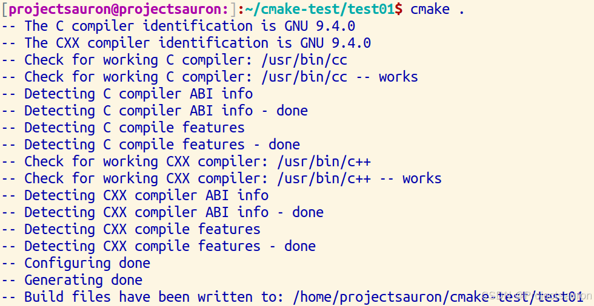
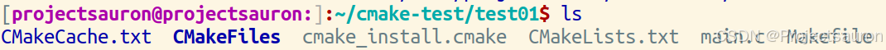
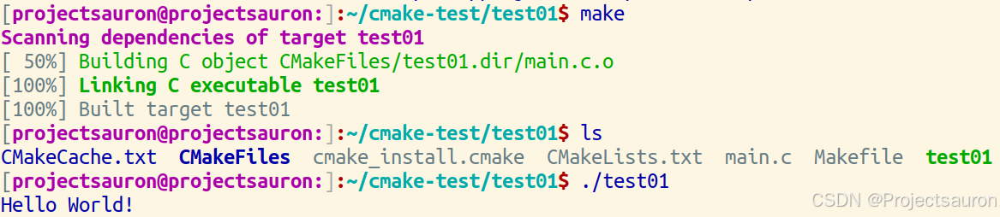
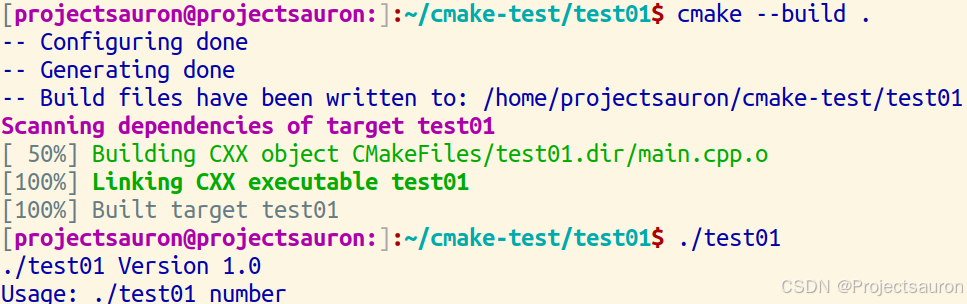
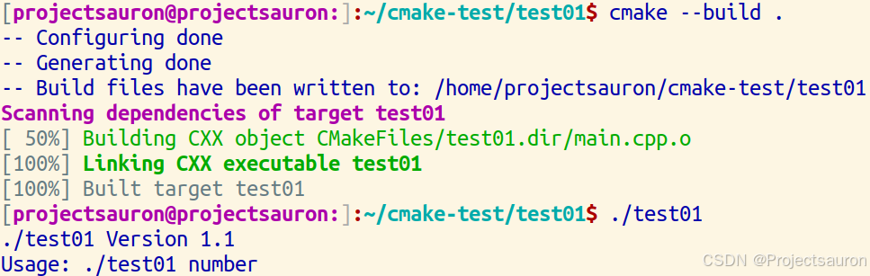

CMake 教程（一）初识 CMake
[toc]
CMake 是个一个开源的跨平台自动化建构系统，用来管理软件建置的程序，并不依赖于某特定编译器，并可支持多层目录、多个应用程序与多个函数库。
CMake 通过使用简单的配置文件 CMakeLists.txt，自动生成不同平台的构建文件（如 Makefile、Ninja 构建文件、Visual Studio 工程文件等），简化了项目的编译和构建过程。
CMake 本身不是构建工具，而是==生成构建系统的工具==，它生成的构建系统可以使用不同的编译器和工具链。
一、基本使用
最基本的 CMake 项目是从单个源代码文件构建的可执行文件。对于像这样的简单项目，只需要一个包含三个命令的 CMakeLists.txt 文件。
下面是一个 esp32-idf 项目生成的 CMakeLists.txt 文件：
1 | cmake_minimum_required(VERSION 3.16) |
下面将从它开始一步步地介绍 CMake 的结构和语法。
1、命令语句
1.1 指定最低版本要求
任何项目的 CMakeLists.txt 都必须首先使用 cmake_minimum_required() 命令指定最低 CMake 版本。这将建立策略设置，并确保以下 CMake 函数与兼容的 CMake 版本一起运行。语法如下：
1 | cmake_minimum_required(VERSION <version>) |
就比如上面的 cmake_minimum_required(VERSION 3.16)。
1.2 定义项目的名称和使用的编程语言
要启动项目，我们使用 project() 命令来设置项目名称。每个项目都需要此调用，并且应在 cmake_minimum_required() 之后立即调用。正如我们稍后将看到的，此命令还可用于指定其他项目级别信息，例如语言或版本号。
1 | project(<project_name> [<language>...]) |
1.3 指定要生成的可执行文件和其源文件
通过 add_executable() 命令，可以告诉 CMake 使用指定的源代码文件创建可执行文件：
1 | add_executable(<target> <options>... <source_files>...) |
注意，<name> 对应于逻辑目标名称，并且在项目中必须是全局唯一的。生成的可执行文件的实际文件名是根据本机平台的约定（例如 <name>.exe 或仅 <name>）构建的。
<options> 有如下选项：
WIN32：WIN32选项用于指定生成的项目是一个 Windows 应用程序。设置WIN32选项后，CMake会自动将生成的项目配置为一个Windows窗口应用程序，包括引入必要的头文件和库。MACOSX_BUNDLE：MACOSX_BUNDLE选项用于在 Mac OS X 上生成一个应用程序的Bundle。Bundle是 Mac 应用程序的一种文件格式，它将可执行文件、资源文件、库文件等打包到一个文件夹中，方便应用程序的部署和分发。EXCLUDE_FROM_ALL：EXCLUDE_FROM_ALL选项用于将某个目标从生成过程中排除。当设置了这个选项后，该目标在执行 make 命令时将不会被构建。
例如：
1 | add_executable(MyProject main.cpp other.cpp) |
1.4 实例一——基本使用
前面的函数一时理解不了也没事，先学会用就行了。下面看一个简单的实例，看一下 CMake 是怎么用的。
先写一个简单的 C 程序：
1 | // main.c |
然后写 CMakeLists.txt 文件：
1 | cmake_minimum_required(VERSION 3.16) |
然后用命令 cmake . 或者 cmake-gui：

在项目目录下，CMake 为我们生成了如下文件：

正如前面所言，CMake 本身不是构建工具，而是==生成构建系统的工具==。它为我们生成了一个 Makefile 文件，下面 make 一下：

或者直接
cmake --build .一步到位
执行成功！
相比于我以前直接编写 Makefile 文件要方便不少。
1.5 创建一个库（静态库或动态库）及其源文件
1 | add_library(<target> <source_files>...) |
例如：
1 | add_library(MyProject STATIC library.cpp) |
1.6 链接目标文件与其他库
1 | target_link_libraries(<target> <libraries>...) |
例如：
1 | target_link_libraries(MyProject MyLibrary) |
1.7 添加头文件搜索路径
1 | include_directories(<dirs>...) |
例如：
1 | include_directories(${PROJECT_SOURCE_DIR}/include) |
1.8 设置变量的值
1 | set(<variable> <value>...) |
例如：
1 | set(CMAKE_CXX_STANDARD 11) |
1.9 设置目标属性
指定编译给定目标时要使用的包含目录。命名的 <target> 必须由 add_executable() 或 add_library() 等命令创建，并且不能是 ALIAS 目标。
1 | target_include_directories(<target> [SYSTEM] [AFTER|BEFORE] |
例如：
1 | target_include_directories(MyExecutable PRIVATE ${PROJECT_SOURCE_DIR}/include) |
1.10 安装规则
1 | install(TARGETS target1 [target2 ...] |
例如：
1 | install(TARGETS MyExecutable RUNTIME DESTINATION bin) |
1.11 条件语句
1 | if(expression) |
例如：
1 | if(CMAKE_BUILD_TYPE STREQUAL "Debug") |
1.12 自定义命令
1 | add_custom_command( |
例如：
1 | add_custom_command( |
2、变量和缓存
CMake 使用变量来存储和传递信息，这些变量可以在 CMakeLists.txt 文件中定义和使用。
变量可以分为普通变量和缓存变量。
2.1 普通变量
- 定义变量：
1 | set(MY_VAR "Hello World") |
- 使用变量：
1 | message(STATUS "Variable MY_VAR is ${MY_VAR}") |
2.2 缓存变量
缓存变量存储在 CMake 的缓存文件中，用户可以在 CMake 配置时修改这些值。缓存变量通常用于用户输入的设置，例如编译选项和路径。
- 定义缓存变量：
1 | set(MY_CACHE_VAR "DefaultValue" CACHE STRING "A cache variable") |
- 使用缓存变量：
1 | message(STATUS "Cache variable MY_CACHE_VAR is ${MY_CACHE_VAR}") |
2.3 特殊变量
前面的变量都是我们自己定义的，而 CMake 有一些特殊的变量，这些变量要么是在幕后创建的，要么在由项目代码设置时对 CMake 有意义。其中许多变量以 CMAKE_ 开头。在为项目创建变量时，请避免此命名约定。其中两个特殊的用户可设置变量是 CMAKE_CXX_STANDARD 和 CMAKE_CXX_STANDARD_REQUIRED。这些可以一起使用来指定构建项目所需的 C++ 标准。
2.4 实例二——指定 C++ 标准
现在尝试在 CMakeLists.txt 文件中指定 C++ 标准：
1 | cmake_minimum_required(VERSION 3.16) |
在前面的基础上添加最后两句即可。
1 | // main.cpp |
后面的过程不再多说。
3、实例三——添加版本号和配置的头文件
有时，在 CMakelists.txt 文件中定义的变量在源代码中也可用可能很有用。在这种情况下，我们希望打印项目版本。
实现此目的的一种方法是使用配置的头文件。我们创建一个包含一个或多个要替换的变量的输入文件。这些变量具有类似于 @VAR@ 的特殊语法。然后，我们使用 configure_file() 命令将输入文件复制到给定的输出文件，并将这些变量替换为 CMakelists.txt 文件中的 VAR 当前值。
configure_file() 命令格式见下：
1 | configure_file(<input> <output> |
它的作用是将文件复制到其他位置并修改其内容。在执行输入文件内容的转换时将文件复制到文件。<input><output>
如果输入文件被修改，构建系统将重新运行 CMake 以重新配置文件并再次生成构建系统。生成的文件将被修改，并且仅当其内容发生更改时，才会在后续 cmake 运行时更新其时间戳。
选项：
<input>：输入文件的路径。相对路径根据CMAKE_CURRENT_SOURCE_DIR的值进行处理。输入路径必须是文件，而不是目录。<output>：输出文件或目录的路径。相对路径根据CMAKE_CURRENT_BINARY_DIR的值进行处理。如果路径命名现有目录，则输出文件将放置在该目录中，其文件名与输入文件相同。如果路径包含不存在的目录，则会创建这些目录。NO_SOURCE_PERMISSIONS：不要将输入文件的权限转移到输出文件。复制的文件权限默认为标准 644 值 （-rw-r--r--）。USE_SOURCE_PERMISSIONS：将输入文件的权限传输到输出文件。如果三个与权限相关的关键字均未给出 （或 ），则这已经是默认行为。关键字主要用作使调用站点的预期行为更清晰的一种方式。NO_SOURCE_PERMISSIONS、USE_SOURCE_PERMISSIONS、FILE_PERMISSIONS、USE_SOURCE_PERMISSIONSFILE_PERMISSIONS <permissions>...：忽略输入文件的权限，改用为输出文件指定的权限。<permissions>COPYONLY：复制文件而不替换任何变量引用或其他内容。此选项不能与 一起使用。NEWLINE_STYLEESCAPE_QUOTES：用反斜杠转义任何替换的引号（C 样式）。@ONLY：将变量替换限制为 形式的引用 。这对于配置使用语法的脚本非常有用。@VAR@${VAR}NEWLINE_STYLE <style>：指定输出文件的换行符样式。为换行符指定 or，或为换行符指定 、 或 。此选项不能与 一起使用。UNIXLF、DOSWIN32CRLF、COPYONLY
在本练习中，我们将通过打印版本号来改进可执行文件。虽然我们可以在源代码中专门执行此操作，但使用 CMakeLists.txt 可以让我们维护版本号的单一数据源。下面开始编写程序。
首先，我们修改 CMakeLists.txt 文件以使用 project() 命令来设置项目名称和版本号。调用 project() 命令时，CMake 在幕后定义 test01_VERSION_MAJOR 和 test01_VERSION_MINOR。
注意，这里的格式为：
<PROJECT-NAME>_VERSION_MAJOR、<PROJECT-NAME>_VERSION_MINOR，这个<PROJECT-NAME>一定要和project()里的项目名称一定要一致
1 | project(test01 VERSION 1.0) |
test.h.in 是要配置的输入头文件。当从我们的 CMakeLists.txt 调用 configure_file() 时，@test01_VERSION_MAJOR@ 和 @test01_VERSION_MINOR@ 的值将替换为 test.h 中项目中的相应版本号。
然后修改 main.cpp：
1 |
|

当再次修改 CMakeLists.txt 文件时，版本信息也会随之改变。
